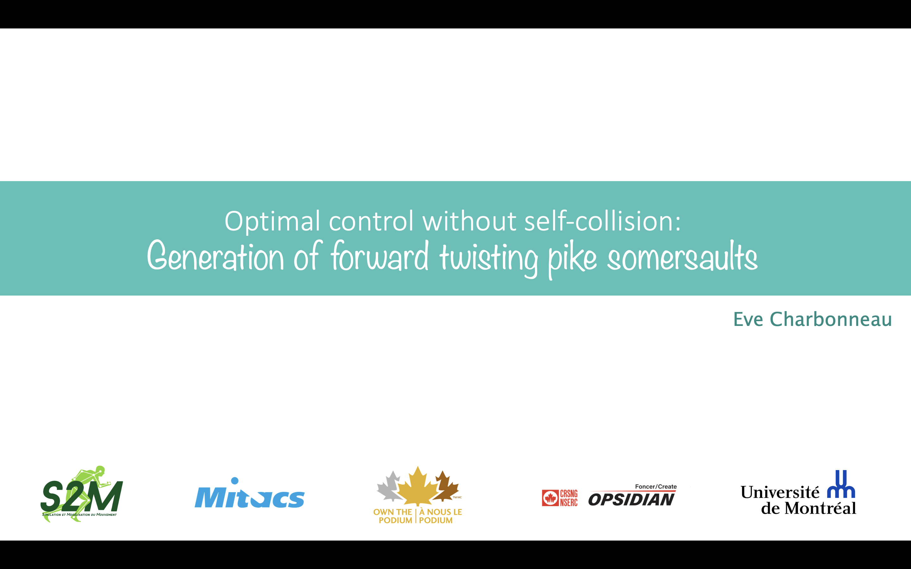

Eve Charbonneau
I am a PhD student at Laboratoire de simulation et modélisation du mouvement (Université de Montréal). My main research interests are biomechanics, sport performance, optimal control, motor command robustness, motor control, and complex human movements. .
For any questions or collaboration interests, feel free to reach out to me via mail!
Bio Mail Twitter Scholar Github LinkedIn
Awards:

Publications

Optimal control as a tool for innovation in aerial twisting on a trampoline
Eve Charbonneau, Francois Bailly, Loane Danes, Mickael Begon
MDPI, 2020
Project Page /
Eve Charbonneau, Francois Bailly, Loane Danes, Mickael Begon
MDPI, 2020
Project Page /
@InProceedings{charbonneau2020optimal,
author = {Eve Charbonneau and Francois Bailly and Loane Danes and Mickael Begon},
title = {Optimal control as a tool for innovation in aerial twisting on a trampoline},
booktitle = {MDPI},
year = {2020},
}Optimal forward twisting pike somersault without self-collision
Eve Charbonneau, Francois Bailly, Mickael Begon
Taylor \& Francis, 2023
Project Page /
Eve Charbonneau, Francois Bailly, Mickael Begon
Taylor \& Francis, 2023
Project Page /
@InProceedings{charbonneau2023optimal,
author = {Eve Charbonneau and Francois Bailly and Mickael Begon},
title = {Optimal forward twisting pike somersault without self-collision},
booktitle = {Taylor \& Francis},
year = {2023},
}Warm-starting multi-start procedure using penalties instead of constraints to find more optimal trajectories
Eve Charbonneau, Francisco Pascoa, Mickael Begon
Proceedings of the 11th ECCOMAS Thematic Conference on multibody dynamics, 2023
Project Page /
Eve Charbonneau, Francisco Pascoa, Mickael Begon
Proceedings of the 11th ECCOMAS Thematic Conference on multibody dynamics, 2023
Project Page /
@InProceedings{charbonneau2023warm,
author = {Eve Charbonneau and Francisco Pascoa and Mickael Begon},
title = {Warm-starting multi-start procedure using penalties instead of constraints to find more optimal trajectories},
booktitle = {Proceedings of the 11th ECCOMAS Thematic Conference on multibody dynamics},
year = {2023},
}Should all athletes use the same twisting strategy? The role of anthropometry in the personalization of optimal acrobatic techniques
Eve Charbonneau, Lisa Sechoir, Francisco Pascoa, Mickael Begon
SportRxiv, 2023
Project Page /
Eve Charbonneau, Lisa Sechoir, Francisco Pascoa, Mickael Begon
SportRxiv, 2023
Project Page /
@InProceedings{charbonneau2023should,
author = {Eve Charbonneau and Lisa Sechoir and Francisco Pascoa and Mickael Begon},
title = {Should all athletes use the same twisting strategy? The role of anthropometry in the personalization of optimal acrobatic techniques},
booktitle = {SportRxiv},
year = {2023},
}A temporal quantitative analysis of visuomotor behavior during different twisting somersaults in elite and sub-elite trampolinists
Eve Charbonneau, Mickael Begon, Thomas Romeas
SportRxiv, 2023
Project Page /
Eve Charbonneau, Mickael Begon, Thomas Romeas
SportRxiv, 2023
Project Page /
@InProceedings{charbonneau2023temporal,
author = {Eve Charbonneau and Mickael Begon and Thomas Romeas},
title = {A temporal quantitative analysis of visuomotor behavior during different twisting somersaults in elite and sub-elite trampolinists},
booktitle = {SportRxiv},
year = {2023},
}Optimal 3D arm strategies for maximizing twist rotation during somersault of a rigid-body model
Francois Bailly, Eve Charbonneau, Loane Danes, Mickael Begon
Springer, 2021
Project Page /
Francois Bailly, Eve Charbonneau, Loane Danes, Mickael Begon
Springer, 2021
Project Page /
@InProceedings{bailly2021optimal,
author = {Francois Bailly and Eve Charbonneau and Loane Danes and Mickael Begon},
title = {Optimal 3D arm strategies for maximizing twist rotation during somersault of a rigid-body model},
booktitle = {Springer},
year = {2021},
}Optimal estimation of complex aerial movements using dynamic optimisation
Andre Venne, Francois Bailly, Eve Charbonneau, Jennifer Dowling-Medley, Mickael Begon
Taylor \& Francis, 2023
Project Page /
Andre Venne, Francois Bailly, Eve Charbonneau, Jennifer Dowling-Medley, Mickael Begon
Taylor \& Francis, 2023
Project Page /
@InProceedings{venne2023optimal,
author = {Andre Venne and Francois Bailly and Eve Charbonneau and Jennifer Dowling-Medley and Mickael Begon},
title = {Optimal estimation of complex aerial movements using dynamic optimisation},
booktitle = {Taylor \& Francis},
year = {2023},
}
Bioptim, a python framework for musculoskeletal optimal control in biomechanics
Benjamin Michaud, Francois Bailly, Eve Charbonneau, Amedeo Ceglia, Lea Sanchez, Mickael Begon
IEEE, 2022
Project Page /
Benjamin Michaud, Francois Bailly, Eve Charbonneau, Amedeo Ceglia, Lea Sanchez, Mickael Begon
IEEE, 2022
Project Page /
@InProceedings{michaud2022bioptim,
author = {Benjamin Michaud and Francois Bailly and Eve Charbonneau and Amedeo Ceglia and Lea Sanchez and Mickael Begon},
title = {Bioptim, a python framework for musculoskeletal optimal control in biomechanics},
booktitle = {IEEE},
year = {2022},
}Optimality equivalence and computational advantages of free-floating base dynamics compared to full-body dynamics
Pierre Puchaud, Eve Charbonneau, Benjamin Michaud, Mickael Begon
Elsevier, 2023
Project Page /
Pierre Puchaud, Eve Charbonneau, Benjamin Michaud, Mickael Begon
Elsevier, 2023
Project Page /
@InProceedings{puchaud2023optimality,
author = {Pierre Puchaud and Eve Charbonneau and Benjamin Michaud and Mickael Begon},
title = {Optimality equivalence and computational advantages of free-floating base dynamics compared to full-body dynamics},
booktitle = {Elsevier},
year = {2023},
}Talks

Warm-starting multi-start procedure using penalties instead of constraints to find more optimal trajectories
11th ECCOMAS Thematic Conference on multibody dynamics, 2023
Slides
11th ECCOMAS Thematic Conference on multibody dynamics, 2023
Slides
Using a Stochastic Optimal Control Framework to Model the Control of Complex Human Movement: Application to an Aerial Acrobatics
33rd annual meeting of the society for the neural control of movement, 2024
Slides
33rd annual meeting of the society for the neural control of movement, 2024
Slides
Optimal control for maximizing twist rotation on trampoline
Sport Innovation Summit, 2017
Sport Innovation Summit, 2017
Optimal control for maximizing robust twisting techniques on trampoline
Sport Innovation Summit, 2018
Slides
Sport Innovation Summit, 2018
Slides

Are land drills relevant tools for teaching twisting somersaults arm techniques? A case study
Sport Innovation Summit, 2020
Sport Innovation Summit, 2020

Optimal control without self-collision: generation of forward twisting pike somersaults
Sport Innovation Summit, 2021
Slides
Sport Innovation Summit, 2021
Slides
Jumping out of the computer onto the trampoline: what can trampolinists learn from predictive simulations?
Sport Innovation Summit, 2022
Slides
Sport Innovation Summit, 2022
Slides
Impact of the atheltes’ anthropometry on the optimal acrobatics techniques
Canadian Society for Mechanical Engineering International Congress, 2023
Slides
Canadian Society for Mechanical Engineering International Congress, 2023
Slides
L’utilisation d’une contrainte de non-collision : un pas de plus vers la génération de mouvements optimaux réalistes
Congrès de l’association québécoise des sciences de l’activité physique, 2021
Congrès de l’association québécoise des sciences de l’activité physique, 2021
Stratégies visuelles de trampolinistes élites et sous-élites durant l’exécution de saltos vrillés
Congrès de l’association québécoise des sciences de l’activité physique, 2023
Slides
Congrès de l’association québécoise des sciences de l’activité physique, 2023
Slides
Homepage Template
Generated using the template from Michael Niemeyer.